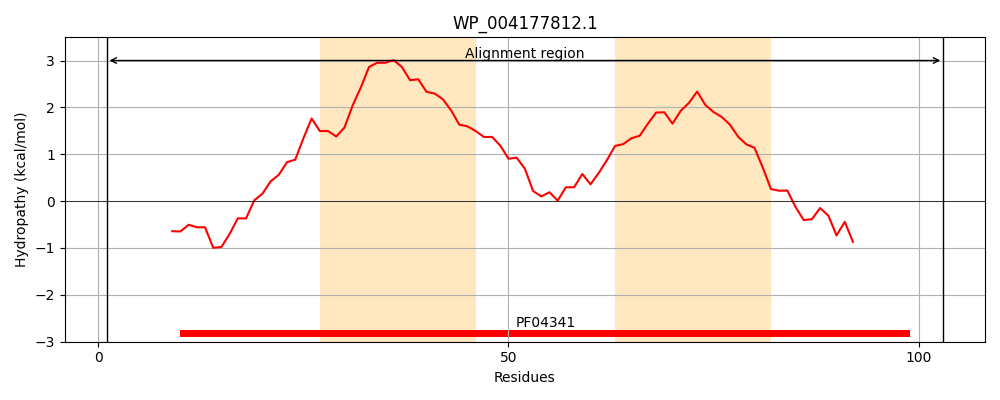
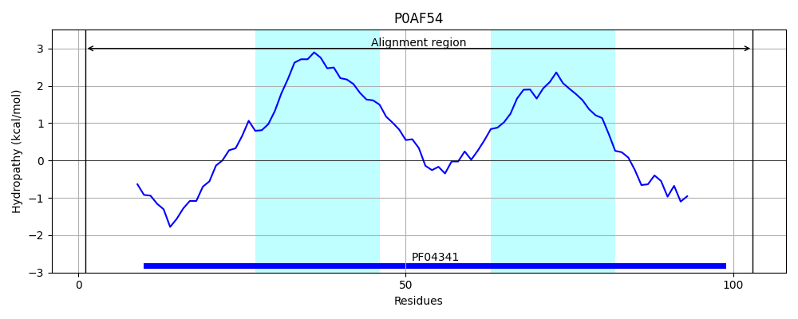
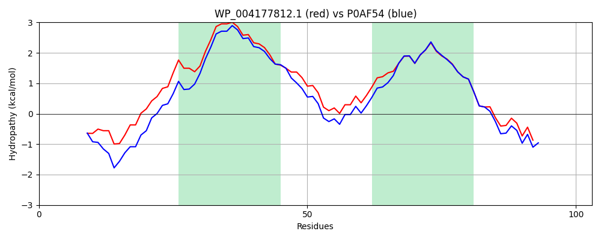

Hit Accession: P0AF54
Hit TCID: 9.B.136.1.1
Hit Description: gnl|BL_ORD_ID|8808 gnl|TC-DB|P0AF54|9.B.136.1.1 Inner membrane protein yjcH OS=Escherichia coli (strain K12) GN=yjcH PE=1 SV=1
Mach Len: 103
e:0.000000
Query TMS Count : 2
Hit TMS Count: 2
TMS-Overlap Score: 2.000000
Predicted Substrates:None
BLAST Alignment:
| Protein Hydropathy Plots: | |
|---|---|
|  |  |
Pairwise Alignment-Hydropathy Plot: | |
|  | |